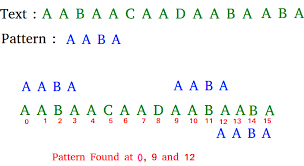

Rabin-Karp Algorithm
Category: AWS Log Monitoring & Security
Description: Uses a rolling hash to compare pattern hashes with text hashes, enabling fast multi-pattern searching across massive log streams.
📦 Business Case (Amazon):
- Scanning CloudWatch logs for multiple error signatures in real time.
- GuardDuty-style detection of leaked credentials or attack fingerprints.
- Plagiarism or duplicate-content checks in Kindle text ingestion.
🧠 How It Works?
- Compute hash of the pattern(s).
- Slide a window over the text, updating hash in O(1) via rolling hash.
- If hashes match, verify characters to remove false positives.
📊 Visualization

Rabin-Karp Example Visualization
👩💻 View Code
Click here for code
🧮 Complexity Analysis
- Average Time: O(n + m) expected
- Worst Time: O(n m) (rare, many hash collisions)
- Space: O(1)